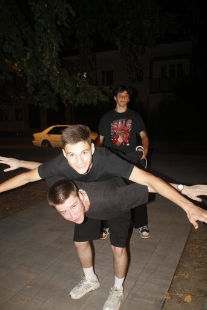

Обо мне
Добро пожаловать на страничку, здесь я буду применять тот стек технологий, которому научучь за время оубчения во втором семестре
Фронтенд
Фронтенд (или клиентская часть) — это то, что видит пользователь. Он включает в себя все визуальные элементы веб-сайта или приложения: кнопки, формы, изображения и текст. Фронтенд разработчики используют языки разметки и стилизации, такие как HTML, CSS и JavaScript, чтобы создавать интерактивные и привлекательные интерфейсы. Основная задача фронтенда — обеспечить удобство использования и эстетическую привлекательность.
Бэкенд
Бэкенд (или серверная часть) — это “за кулисами” веб-приложения. Он отвечает за обработку данных, управление пользователями и взаимодействие с базами данных. Бэкенд разработчики используют языки программирования, такие как Python, Ruby, Java или PHP, а также фреймворки и базы данных для создания логики приложения. Основная задача бэкенда — обеспечить стабильную работу приложения и безопасность данных.